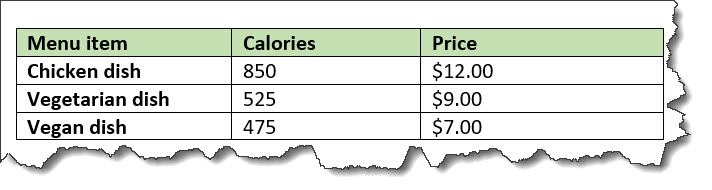

<simpletable>
A simple table is a basic tabular environment that is designed to present organized content.
Usage information
The <simpletable> element is
designed for close compatibility with HTML5
tables. It can contain a title and allows column and row spanning.
The @keycol attribute indicates the key
column. A key column contains content that represents the key to the tabular
structure.
The <simpletable> element can
also be used as the base for specialized
structures, such as the property and choice tables that are available in the Technical
Content edition.
Rendering expectations
When a key column is specified for a simple table, it is treated as a vertical header.
Attributes
The following attributes are available on this element: universal attributes, display attributes, and simpletable attributes.
Examples
This section contains examples of how the
<simpletable> element can be
used.
The following code sample shows a simple table that contains menu items and prices:
<simpletable>
<sthead>
<stentry>Menu item</stentry>
<stentry>Price</stentry>
</sthead>
<strow>
<stentry>Apple pie</stentry>
<stentry>$7.00</stentry>
</strow>
<strow>
<stentry>Cheese sandwich</stentry>
<stentry>$10.00</stentry>
</strow>
<strow>
<stentry>Milk shake</stentry>
<stentry>$6.50</stentry>
</strow>
</simpletable>The simple table might be rendered in the following way:

The following code sample shows a simple table that tracks meals. The table has a title and column and row spans.
<simpletable>
<title>Food log for Wednesday</title>
<sthead>
<stentry>Meal</stentry>
<stentry>Food</stentry>
</sthead>
<strow>
<stentry colspan="2">Fasting period</stentry>
</strow>
<strow>
<stentry>Lunch</stentry>
<stentry rowspan="2">Pasta</stentry>
</strow>
<strow>
<stentry>Dinner</stentry>
</strow>
</simpletable>The simple table might be rendered in the following way:

@keycol
The following code sample shows a simple table that contains information about the
caloric content and prices of menu items. The
@keycol attribute indicates that the
first column, which contains the menu items, is the key column.
<simpletable keycol="1">
<sthead>
<stentry>Menu item</stentry>
<stentry>Calories</stentry>
<stentry>Price</stentry>
</sthead>
<strow>
<stentry>Chicken dish</stentry>
<stentry>850</stentry>
<stentry>$12.00</stentry>
</strow>
<strow>
<stentry>Vegetarian dish</stentry>
<stentry>525</stentry>
<stentry>$9.00</stentry>
</strow>
<strow>
<stentry>Vegan dish</stentry>
<stentry>475</stentry>
<stentry>$7.00</stentry>
</strow>
</simpletable>This simple table might be rendered in the following way:

In the sample rendering, the content of the key column is highlighted with bold formatting. However, note that rendering of the key column is left up to the implementation.